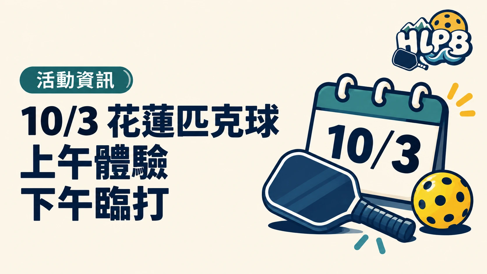
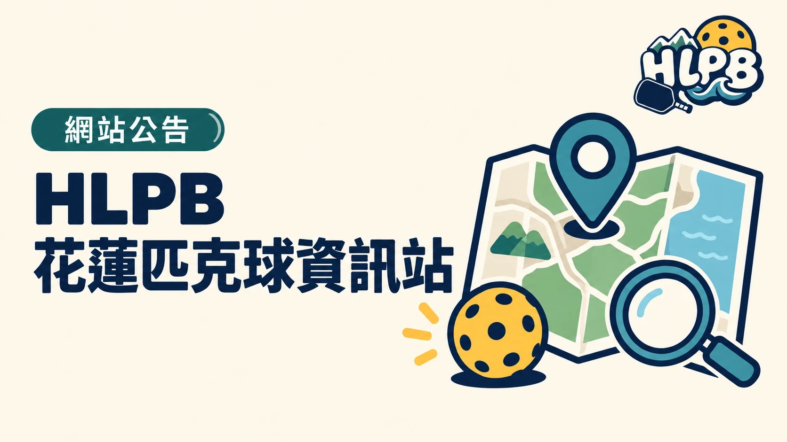

比賽資訊
115 年洄瀾盃匹克球項目：賽事資訊查詢入口
2026 年 11 月 8 日（星期日）於花蓮縣立中正體育館舉行。海報列有機關團體、公開、一般、樂活、新手與國小組；組別資格、賽程及報名狀態請以賽事查詢系統為準。
查看完整資訊網站公告、活動更新與花蓮匹克球近期情報。
2026 年 11 月 8 日（星期日）於花蓮縣立中正體育館舉行。海報列有機關團體、公開、一般、樂活、新手與國小組；組別資格、賽程及報名狀態請以賽事查詢系統為準。
查看完整資訊
10 月 3 日（星期六）花蓮縣立體育館上午 09:30–12:00 有免費匹克球體驗，來源頁列 6 至 65 歲可報名；下午 13:30–16:30 為每人 250 元的臨打，限額 30 人，需自備球拍與室內運動鞋。兩場活動請分別查看原始頁面確認名額。
查看完整資訊
HLPB 集中整理花蓮球場設備與使用限制、揪團及活動入口、新手規則、球具指南與實用文章。內容取自公開資訊與球友提供；出發或報名前請再確認管理單位、主辦單位的最新公告，也歡迎回報變動。
查看完整資訊